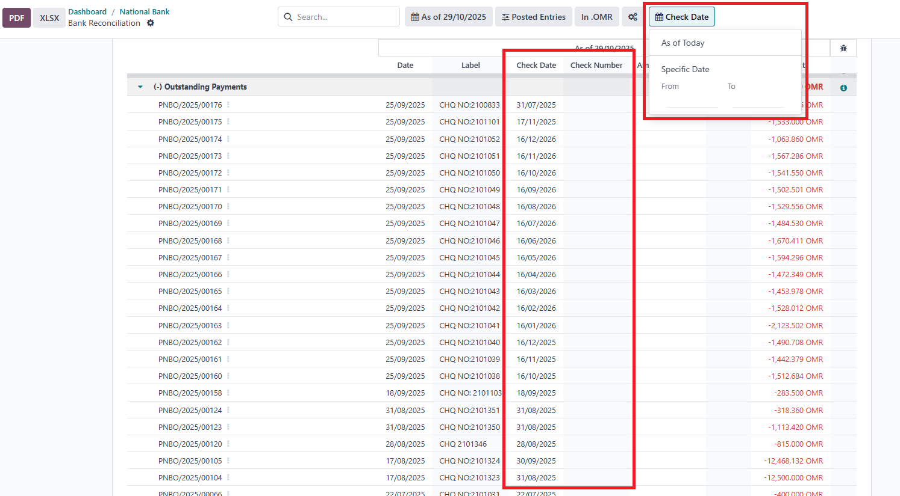

This Odoo 18 module enhances the Bank Reconciliation Report by adding two essential fields Check Date and Check Number making it easier to track payments and reconcile transactions more precisely.
Additionally, it introduces a "Check Date Filter" configuration in: Accounting > Configuration > Accounting Reports > Bank Reconciliation Report.
When enabled, this filter displays a Check Date Filter option directly on the Bank Reconciliation Report page, allowing users to filter data by As on Date or by a Custom Date Range (From / To).
This module helps accountants, auditors, and financial managers quickly reconcile transactions based on check issuance or clearing dates, improving financial visibility and reducing manual filtering effort.

softwarebox18@gmail.com